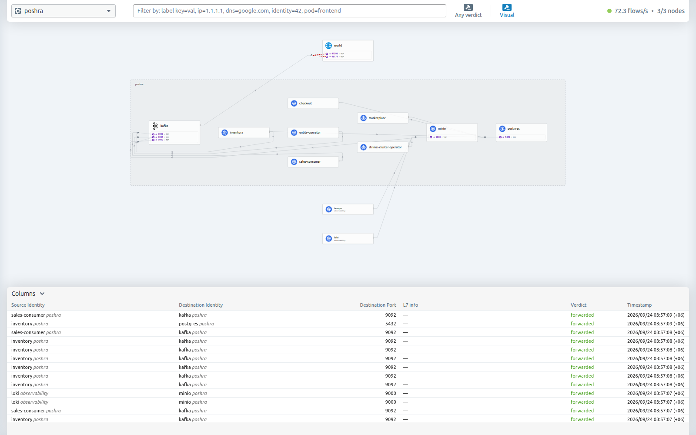
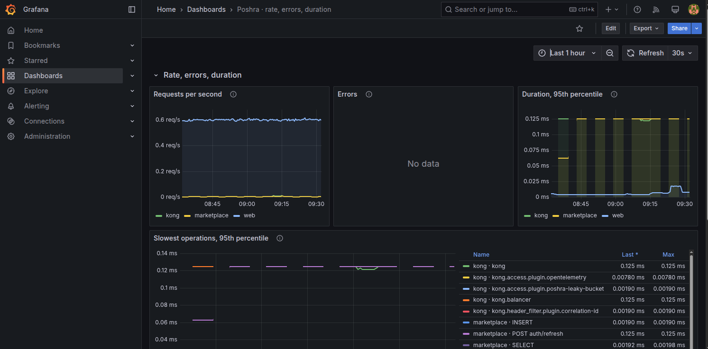
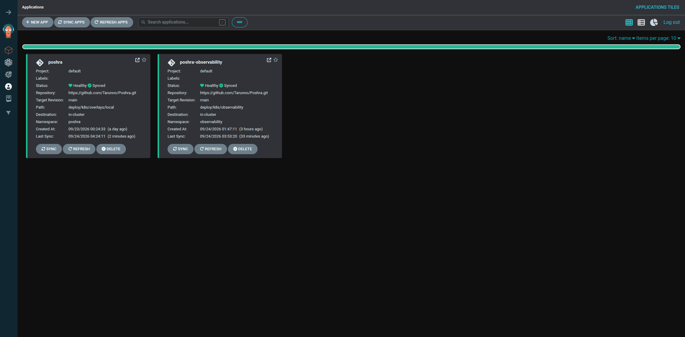
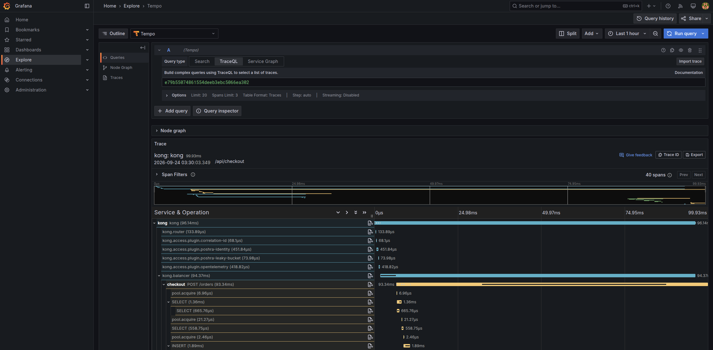

A single trace from the gateway through checkout into the Kafka consumers, a service map drawn from real traffic, rate and errors derived from the traces themselves, and a cluster that only changes through git.



